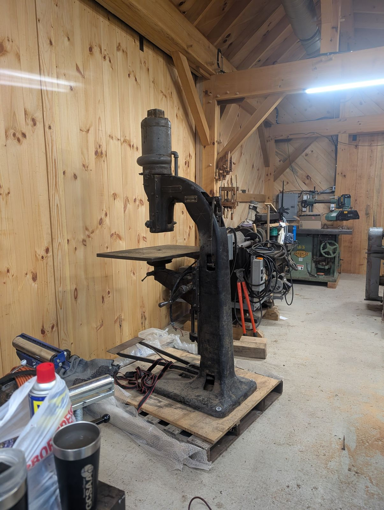
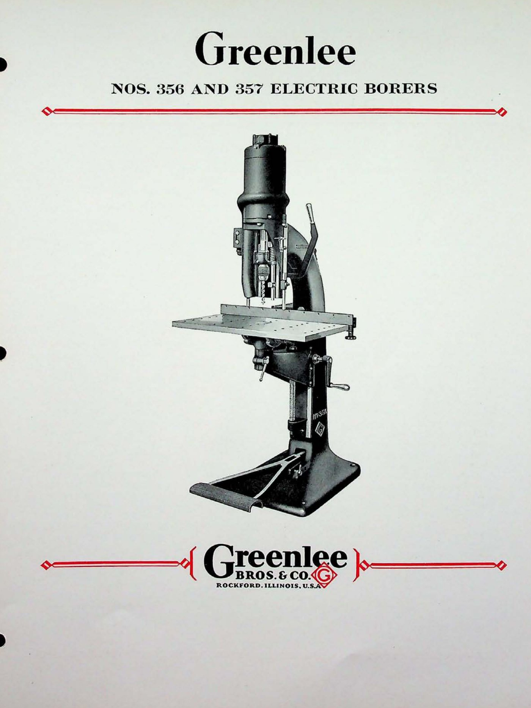
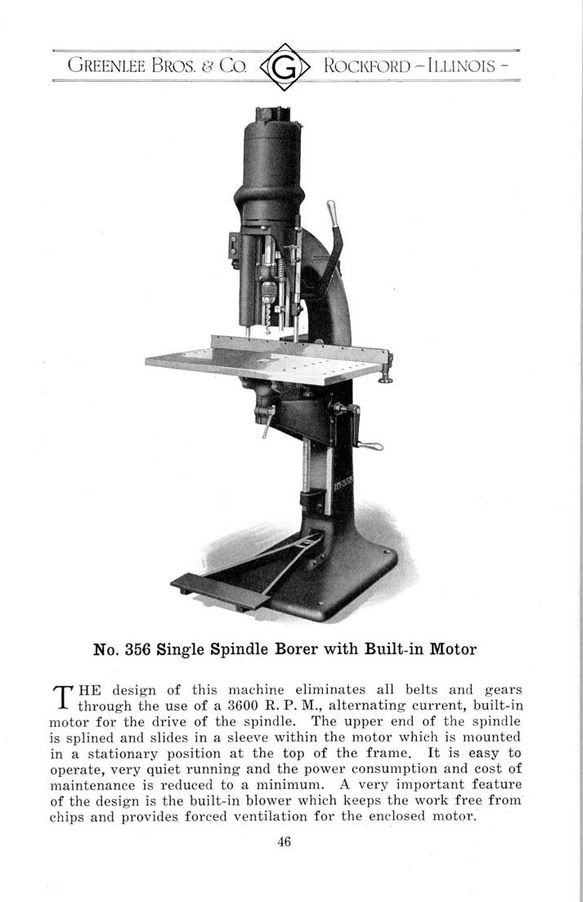
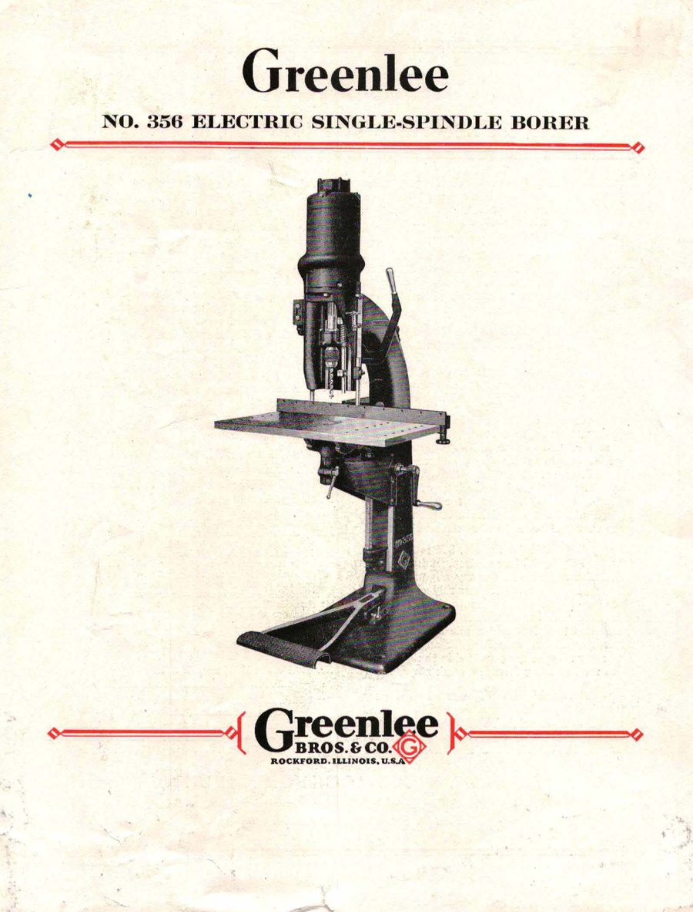

No. 356 Vertical Boring Machine
Precision boring from above · 300-Series · March 1923

The machine
A vertical boring machine is, at heart, the shop’s answer to the question “how do you drill the same accurate hole a thousand times?” The spindle plunges straight down into work held flat on a table — dowel joints, hardware seats, hinge cups — with a squareness and repeatability no hand brace could offer. The 300-Series were Greenlee’s boring machines, workhorses of the furniture and millwork factories of the upper Midwest.
The one in this collection
Serial 34731 was built in March 1923. It carries the one deliberate anachronism in this collection: it spins up on a modern variable-frequency drive. A VFD gives the 1923 spindle a soft start its original motor never had — no belt squeal, no lights dimming, just a smooth ramp from silence to speed. The philosophy of the collection is to keep the machines working, and where modern electronics can spare hundred-year-old windings and bearings, the machines get them. The iron does not seem to mind.
From the Catalog

“They are built around the idea of a stationary motor, a splined spindle which slides in a broached sleeve within the motor… This design eliminates all belts and gears and provides an ease of operation and accuracy not found in any other style of single-spindle borer.” Greenlee Bulletin Nos. 356-357 · general-line catalog, 1930s
Catalog scan courtesy of VintageMachinery.org.
Through the Catalogs
The single-spindle borer in 1922, 1931, and 1948 — the built-in-motor idea, refined for a quarter century.


Every frame links to the full publication in the Paper Archive — scans courtesy of VintageMachinery.org.